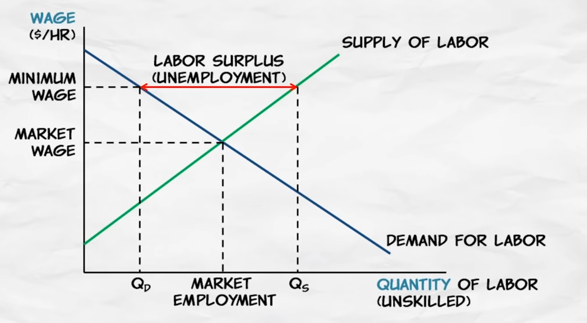

Does price floor works?
A price floor is a minimum price allowed by law. That is, it is a price below which it is illegal to buy or sell, called a price floor because you cannot go below the floor. We're going to show that price floors create four significant effects: surpluses, lost gains from trade, wasteful increases in quality, and a misallocation of resources.
What is surplus of labor with mininum wage? Unemployment
The minimum wage is a price floor, so it's going to create a surplus. A surplus of labor, we call what? A surplus of labor is called unemployment.

Now, who will the minimum wage affect?
Now, who will the minimum wage affect? Workers with very high productivity who are already earning more than the minimum wage – they are not going to be affected by the minimum wage perhaps at all. Instead, it will affect the least experienced, least educated, least trained workers. Low-skilled teenagers, for example, are most likely to be affected by the minimum wage.
Modest increase in minimum wage
Now the minimum wage is a controversial and hotly debated issue. Some academic results indicate that the unemployment effect of a modest increase in the minimum wage would not be substantial. At the same time, however, we also have to recognize that a modest increase in the minimum wage would not have big benefits either. First, only a small percentage of workers are going to be affected by the minimum wage. 97% or so of workers already earn more than the minimum wage.
Large increase in the minimum wage
So a large increase in the minimum wage is going to cause serious unemployment, and the good example of this is Puerto Rico in 1938. Congress actually set the first minimum wage at this time at 25 cents an hour. Now that may seem low, but that's at a time when the average wage in the United States was still less than a dollar an hour, was 62 and a half cents an hour. Congress, however, forgot to exempt Puerto Rico, when the average wages in Puerto Rico at that time were much lower than in the rest of the United States, only three cents to four cents an hour. And lots of Puerto Rican firms went bankrupt, it created devastating unemployment. In fact, Puerto Rican politicians came to Washington to beg for an exemption to get them out of the minimum wage. So, a large increase in the minimum wage would certainly cause substantial and serious unemployment.
We do see higher minimum wages in other countries. The minimum wage in France is higher than the U.S., relative to average wages in those two countries. In addition, labor laws in France make it very difficult to fire workers once they have been hired. As a result, firms in France are very reluctant to hire new workers.
Younger workers are especially affected because they are less productive, and also they are less known commodities. So, the risk of hiring them is greater. As a result, unemployment among young workers is very high in France. It was 23% in 2005, and that was long before the economic crisis, the financial crisis affecting the entire world. So even during good times, unemployment in France among young workers is very high, because the minimum wage is high, and because firms don't want to hire, given how difficult it is to fire workers.
Why do governments enact price controls?
So far, we've looked at a number of the consequences of price controls, both price ceilings and price floors. And most of the consequences, they're not very good.i
Public simply did not connect wage and price controls with their consequences
In November of 1972, Nixon won re-election in a landslide. So, wage and price controls were popular. Nixon was re-elected with this policy as well as with others. Now, why is this? I think in many cases, in a majority of cases, the public simply did not connect wage and price controls with their consequences. So, looking around and the shortages, the long line-ups for gasoline, they didn't say the cause of that is the price control.
Price floor in agriculture
Price floors are also used often in agriculture to try to protect farmers.
As you might have guessed, this creates a problem. There is less quantity demanded (consumed) than quantity supplied (produced). This is called a surplus. If the surplus is allowed to be in the market then the price would actually drop below the equilibrium. In order to prevent this the government must step in. The government has a few options:
-
They can buy up all the surplus. For a while the US government bought grain surpluses in the US and then gave all the grain to Africa. This might have been nice for African consumers, but it destroyed African farmers.
-
They can strictly enforce the price floor and let the surplus go to waste. This means that the suppliers that are able to sell their goods are better off while those who can't sell theirs (because of lack of demand) will be worse off. Minimum wage laws, for example, mean that some workers who are willing to work at a lower wage don't get to work at all. Such workers make up a portion of the unemployed (this is called "structural unemployment").
-
The government can control how much is produced. To prevent too many suppliers from producing, the government can give out production rights or pay people not to produce. Giving out production rights will lead to lobbying for the lucrative rights or even bribery. If the government pays people not to produce, then suddenly more producers will show up and ask to be payed.
-
They can also subsidize consumption. To get demanders to purchase more of the surplus, the government can pay part of the costs. This would obviously get expensive really fast.
Implementing MSP in India
In India, 6.7 million children are going without food, and the question is whether a price floor can still create a surplus. Surplus occurs not because there are not enough people who need the product, but because enough people fail to purchase it at a particular price. At a price floor, there will be far more people who fail to purchase it as the quantity supplied exceeds the quantity demanded, as shown in the diagram.
So price floor is a bad idea. In what way we can protect farmers?
Todo!
Anthelmintic Drug
Albendazole
https://reference.medscape.com/drug/albenza-albendazole-342648
Single-dose oral albendazole is more efficacious against hookworm than mebendazole. To achieve high CRs against both hookworm and T. trichiura, triple-dose regimens are warranted.
After giving a single dose of albendazole 400 mg to 37 people who were positive for Ascaris lumbricoides, 37 people had not found eggs of Ascaris lumbricoides on faecal examination after treatment. Positive subjects Trichuris trichiura were 54 people (mild infections 51.85%, moderate infections 44.44% and severe infections 3.73%). After giving a single dose of albendazole 400 mg to 54 positive people Trichuris trichiura, in severe infections, the percentage of eggs dropped was 100%. In moderate infections, the percentage of the number of eggs dropped is 95.83%. In mild infections, the percentage of total recovery was 7.14%, and the percentage of eggs dropped was 39.29%.
Albendazole, an effective single dose, broad spectrum anthelmintic drug
Albendazole, a new anthelmintic drug was evaluated in Malaysia in 91 patients, with single or mixed infections of Ascaris, Trichuris, and hookworm. Albendazole was administered as a single dose of 400 mg, 600 mg, or 800 mg. The cure rate for Ascaris at all three doses was 100% at days 14 and 21 post-treatment; for hookworm it was 98.8%, 100% and 98%, respectively, at day 14 and 68.8%, 100% and 84%, respectively, at day 21; for Trichuris it was 31.2%, 57.1% and 42.3%, respectively, at day 14 and 27.3%, 60.9% and 48.0%, respectively, at day 21. The egg reduction rate at day 21 was 100% at all three doses for Ascaris, 94.5%, 100% and 96.1%, respectively, for hookworm; and 39.2%, 85.1% and 72.8%, respectively, for Trichuris. There were no side effects, and biochemical examination of blood and urine did not indicate any unfavourable changes. Based on this trial, the recommended dosage for Ascaris and hookworm is a 400 mg single dose, and for Trichuris is a 600 mg single dose. Albendazole appears to be more effective than other available anthelmintic drugs.
Homeopathy Draft
Homeopathy or homoeopathy is a pseudoscientific system of alternative medicine.
- Explain Pseudoscience
Pseudoscience consists of statements, beliefs, or practices that claim to be both scientific and factual but are incompatible with the scientific method.
- Scientific method
- Alternative medicine
- Blinded experiment
- Placebo effect
- Body immune system
- Preparation of Homeopathy
- Dilution of homeopathy
- Composition of some real homeopathy medicine
- Efficacy of homeopathy
- Arguments of common people about homeopathy
- Govt policies and funding on homeopathy
Prescribing an antibiotic? Pair it with probiotics
https://www.ncbi.nlm.nih.gov/pmc/articles/PMC3601687/
When you prescribe antibiotics, tell patients that taking probiotics for the entire course of treatment will help prevent diarrhea.
PRACTICE CHANGER
Recommend that patients taking antibiotics also take probiotics, which have been found to be effective both for the prevention and treatment of antibiotic-associated diarrhea (AAD).1
STRENGTH OF RECOMMENDATION
A: Based on a systematic review and meta-analysis of randomized controlled trials.
Hempel S, Newberry S, Maher A, et al. Probiotics for the prevention and treatment of antibiotic-associated diarrhea. JAMA. 2012;307: 1959-1969.
ILLUSTRATIVE CASE
When you prescribe an antibiotic for a 45-year-old patient with Helicobacter pylori, he worries that the medication will cause diarrhea. Should you recommend that he take probiotics?
More than a third of patients taking antibiotics develop AAD, and in 17% of cases, AAD is fatal. Although the diarrhea may be the result of increased gastrointestinal (GI) motility in some cases, a disruption of the GI flora that normally acts as a barrier to infection and aids in the digestion of carbohydrates is a far more common cause.
Helicobacter Pylori
23 years of the discovery of Helicobacter pylori: Is the debate over?
Situation is exactly opposite in many of the developing countries
Helicobacter pylori is a bacterium that colonizes human stomach and is an established cause of chronic superficial gastritis, chronic active gastritis, peptic ulcer disease and gastric adenocarcinoma. The infection is on a fast decline in most of the western countries, mainly due to the success of therapeutic regimens and improved personal and community hygiene that prevents re-infection. The eradication in some of the countries has been quite promising and the pathogen was declared as an endangered bacterial species. However, the situation is exactly opposite in many of the developing countries due to failure of treatment and emergence of drug resistance.
H. pylori is the primary cause of peptic ulcers and gastric cancer
The prevalence of H. pylori infection remains high (> 50%) in much of the world, although the infection rates are dropping in some developed nations
Beyond the stomach: An updated view of Helicobacter pylori pathogenesis, diagnosis, and treatment
Helicobacter pylori (H. pylori) is an extremely common, yet underappreciated, pathogen that is able to alter host physiology and subvert the host immune response, allowing it to persist for the life of the host. H. pylori is the primary cause of peptic ulcers and gastric cancer. In the United States, the annual cost associated with peptic ulcer disease is estimated to be $6 billion and gastric cancer kills over 700000 people per year globally. The prevalence of H. pylori infection remains high (> 50%) in much of the world, although the infection rates are dropping in some developed nations. The drop in H. pylori prevalence could be a double-edged sword, reducing the incidence of gastric diseases while increasing the risk of allergies and esophageal diseases. The list of diseases potentially caused by H. pylori continues to grow; however, mechanistic explanations of how H. pylori could contribute to extragastric diseases lag far behind clinical studies. A number of host factors and H. pylori virulence factors act in concert to determine which individuals are at the highest risk of disease. These include bacterial cytotoxins and polymorphisms in host genes responsible for directing the immune response. This review discusses the latest advances in H. pylori pathogenesis, diagnosis, and treatment. Up-to-date information on correlations between H. pylori and extragastric diseases is also provided.
Fatty Liver
Experts warn of fatty liver disease 'epidemic' in young people
Nonalcoholic fatty liver disease (NAFLD) is emerging as an important cause of liver disease in India. Epidemiological studies suggest prevalence of NAFLD in around 9% to 32% of general population in India with higher prevalence in those with overweight or obesity and those with diabetes or prediabetes.
Treatment of non‐alcoholic fatty liver disease
Causes of non‐alcoholic fatty liver disease
Non‐alcoholic fatty liver disease (NAFLD) occurs across all age groups and ethnicities and is recognised to occur in 14%–30% of the general population. Primary NAFLD is related to insulin resistance and thus frequently occurs as part of the metabolic changes that accompany obesity, diabetes, and hyperlipidaemia.
| Primary | Obesity, glucose intolerance, hypertriglyceridaemia, low HDL cholesterol, hypertension |
| Nutritional | Protein‐calorie malnutrition, rapid weight loss, gastrointestinal bypass surgery, total parental nutrition |
| Drugs | Glucocorticoids, oestrogens, tamoxifen, amiodarone, methotrexate, diltiazem, zidovudine, valproate, aspirin, tetracycline, cocaine |
| Metabolic | Lipodystrophy, hypopituitarism, dysbetalipoproteinaemia, Weber‐Christian disease |
| Toxins | Amanita phalloides mushroom, phosphorus poisoning, petrochemicals, bacillus cereus toxin |
| Infections | Human immunodeficiency virus, hepatitis C, small bowel diverticulosis with bacterial overgrowth |
Treatment strategies
Treatment strategies for NAFLD have revolved around (1) identification and treatment of associated metabolic conditions such as diabetes and hyperlipidaemia; (2) improving insulin resistance by weight loss, exercise, or pharmacotherapy; (3) using hepato‐protective agents such as antioxidants to protect the liver from secondary insults
Baby Parenting
Amount and Schedule of Baby Formula Feeding
From American Academy of Pediatrics
On average, your baby should take in about 2½ ounces (75 mL) of infant formula a day for every pound (453 g) of body weight.
Amount and Schedule of Baby Formula Feedings
How Much and How Often Should a Newborn Drink Breast Milk?
How Much Formula Should a Newborn Eat?
How to Calm a Fussy Baby
How to Calm a Fussy Baby: Tips for Parents & Caregivers
Checklist for what your baby may need:
Here are some other reasons why your baby may cry and tips on what you can try to meet that need. If your baby is…
Hungry.
Keep track of feeding times and look for early signs of hunger, such as lip-smacking or moving fists to his mouth.
Cold or hot.
Dress your baby in about the same layers of clothing that you are wearing to be comfortable.
Wet or soiled.
Check the diaper. In the first few months, babies wet and soil their diapers a lot.
Spitting up or vomiting a lot.
Some babies have symptoms from gastroesophageal reflux (GER), and the fussiness can be confused with colic. Contact your child's doctor if your baby is fussy after feeding, has excessive spitting or vomiting, and is losing or not gaining weight.
Sick (has a fever or other illness).
Check your baby's temperature. If your baby is younger than 2 months and has a fever, call your child's doctor right away. See Fever and Your Baby for more information.
Overstimulated.
Try ways to calm your baby mentioned above.
Bored.
Quietly sing or hum a song to your baby. Go for a walk.
Baby should never be shaken
No matter how impatient or angry you become, a baby should never be shaken. Shaking an infant hard can cause blindness, brain damage or even death
The Baby Poop and Urination Guide
The Baby Poop Guide: What's Normal and What's Not
The short answer is baby poop that has a green, mustard yellow, or brown color and is soft and grainy is completely normal, but poop that has a white, red, or black color is not.
Breastfed baby poop frequency
According to Dr. Pittman, it can be normal for a breastfed baby to have one bowel movement each week—but it's also normal for them to poop after every feeding. (In other words, as long as a breastfed baby is pooping at least once a week, you're probably good.)
Formula-fed baby poop frequency
Formula-fed baby poop is usually different than breastfed baby poop. That's because stool moves through the intestines more slowly with formula, causing babies to go about once or twice per day, every one or two days, after the first couple of months. Note, however, that some formula-fed infants will poop up to three or four times daily at first.
Here's How Many Wet Diapers a Newborn Should Have
Here's How Many Wet Diapers a Newborn Should Have
Breastfeeding
Breast milk is widely recognized as the optimal source of nutrition for infants, providing essential nutrients, antibodies, and hormones that foster healthy growth and development. The American Academy of Pediatrics recommends exclusive breastfeeding for the first six months of life, citing numerous benefits including enhanced cognitive development, boosted immune systems, and a reduced risk of respiratory and ear infections.
Breast Pumping
However, for mothers who have undergone a cesarean section or those who must return to work, breastfeeding can be a challenge. In such cases, breastpumping milk can be an efficient way to feed breast milk to baby through a bottle, ensuring that they still receive the benefits of breast milk even when direct breastfeeding is not possible. By expressing milk and storing it in a bottle, mothers can maintain their milk supply, alleviate engorgement, and provide their baby with the nourishment they need, even when they are not physically present. This approach also allows partners, caregivers, or family members to participate in feeding, making it a convenient and practical solution for modern families.
Mother's Health and Breast feeding
Breastfeeding has health benefits for the mother too! Breastfeeding can reduce the mother's risk of breast and ovarian cancer, type 2 diabetes, and high blood pressure.
Exclusive breastfeeding for optimal growth, development and health of infantsi
Five great benefits of breastfeeding
Exclusive breastfeeding for about the first six months is recommended. The Dietary Guidelines for Americans recommends continued breastfeeding while introducing appropriate complementary foods until children are 12 months old or older.
The American Academy of Pediatrics and the World Health Organization also recommend exclusive breastfeeding for about 6 months, with continued breastfeeding along with introducing appropriate complementary foods for up to 2 years of age or longer.